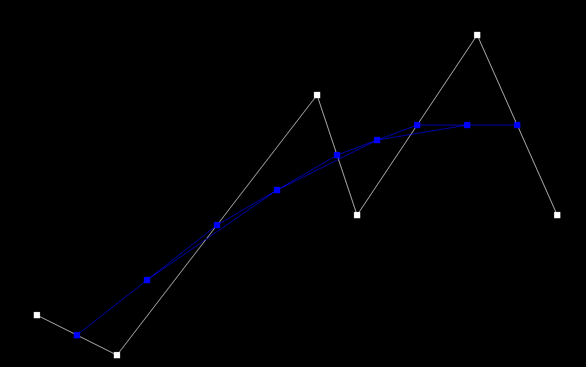
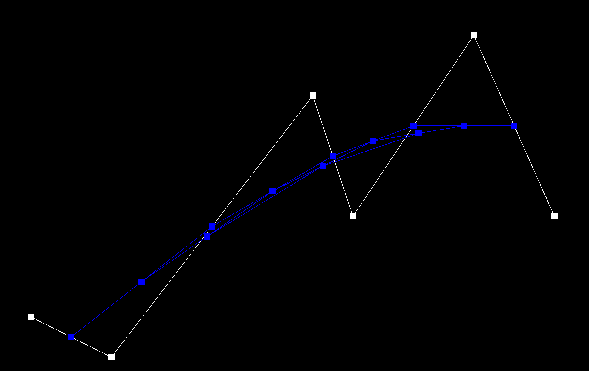
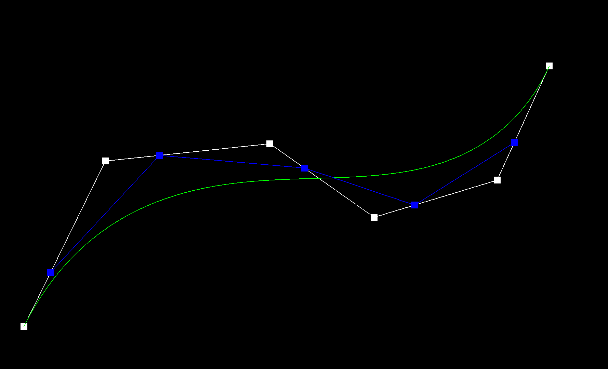
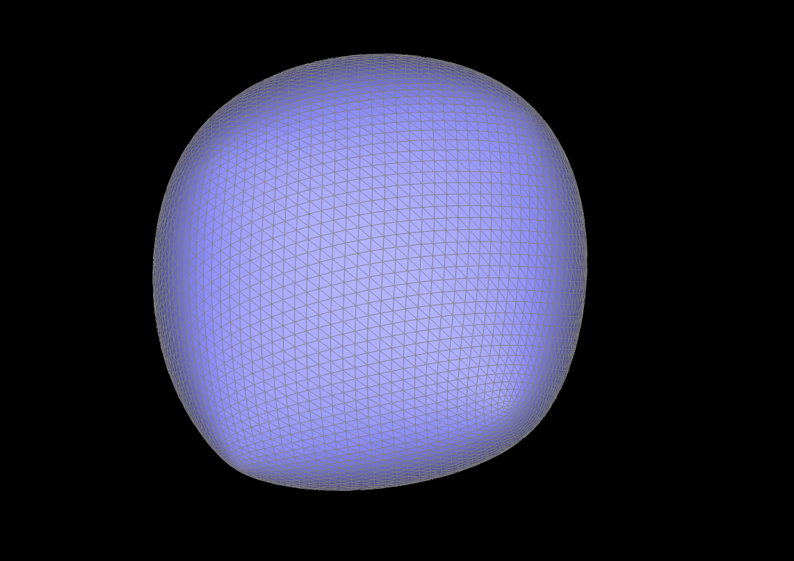

In this assignment, I implemented the Bezier curves and surfaces using the de Casteljau algorithm, manipulated triangle meshes with the half-edge data structure, and implemented loop subdivision for mesh refinement.
Section I: Bezier Curves and Surfaces
Part 1: Bezier curves with 1D de Casteljau subdivision
The de Casteljau algorithm is a recursive algorithm for evaluating Bezier curves. It does this through linear interpolation of the control points.
I implemented this algorithm by first taking the vectors of the control points and applying linear interpolation to them. Then I computed an intermediate
point between the first and second control points, and then another point between the second and third control points using the this formula \( (1-t)*p_i + t*p_{i+1} \) . I repeated this process until I had computed the final point.
The 6 control points of the cubic Bezier curve.
Step 1

Step 2

Step 3
Step 4
Final Step
Completed Bezier Curve

Slightly different Bezier curve by moving the original control points around and modifying the parameter t
Part 2: Bezier surfaces with separable 1D de Casteljau
The de Casteljau algorithm can be extended to 2D Bezier surfaces by applying the 1D algorithm to each row and column of the control points.
In my implementation, the de Casteljau algorithm is extended to 2D Bézier surfaces by first applying the 1D algorithm recursively to the similar function in part 1 along the u-parameter to each row of control points, reducing the 2D grid to a 1D set of intermediate points.
Then, I apply the 1D algorithm again along the v-parameter to these intermediate points, yielding the final interpolated point on the surface. This approach effectively evaluates the Bézier surface by performing successive 1D interpolations.
Image of the Teapot
Section II: Triangle Meshes and Half-Edge Data Structure
Part 3: Area-weighted vertex normals
I implemented area weighted vertex normals by iterating over all the face incident to the vertex and summing the normals of these faces, weighted by their areas.
Then for each face I get three of the vertex positions and find the face normal value by calculating the cross product of two edges of the face.
After this I find the area of the triangle by taking half the magnitude of the cross product and then scale the face normal by this value.
Finally I normailize the vector to get the final unit normal.
Without Vertex Normals (Wireframe Off)
With Vertex Normals (Wireframe Off)
Part 4: Edge flip
I implemented the edge flip function by first identifying all the half-edges, vertices, edges, and faces associated with the edge to be flipped.
Then, I check if it is a boundary edge. If it is a boundary edge, I return the edge without making any changes. If it is not a boundary edge,
I update the half-edge by reassigning the next, twin, vertex, edge, and face pointers. I then set up the neighbors for each half-edge and update the
vertices, edges, and faces. Finally, I return the modified edge
Before Edge Flip
After Random Edge Flips
Part 5: Edge split
I implemented the edge split function by first identifying the half-edges, vertices, edges, and faces associated with the edge to be split.
Then, I check if the edge is on a boundary by verifying if either of its adjacent faces is a boundary face. If it is a boundary edge, I return one of its
existing vertices without making any modifications. If it is not a boundary edge, I create a new vertex at the midpoint of the edge and introduce three new
edges and six new half-edges to accommodate the split. I then update the half-edge structure by reassigning the next, twin, vertex, edge, and face pointers.
After that, I assign the new and existing half-edges to their respective faces and vertices while ensuring the edges are marked correctly.
Finally, I return the newly created midpoint vertex, completing the edge split.
Before Edge Split
After Random Edge Split
After Random Edge Split and Edge Flip
Part 6: Loop subdivision for mesh upsampling
I implemented the loop subdivision function by first computing all the new positions for the vertices and marking them as part of the original mesh.
Then I computed the new positions for the edge midpoints. Next, I split all the original edges and inserted new vertices at the computed midpoints.
After that, I flipped the edges that connect an old and new vertex to maintain a balanced mesh structure.
Finally, I updated all the vertex positions with their computed values.
Showing the subdivision process
Original
Subdivision Step 1
Subdivision Step 2
Subdivision Step 3
Subdivision Step 4

Subdivision Step 5
As you can see in the images above when we continue to subdivide, the sharp corners and edges begin to smooth out. When you pre-split some of the edges before subdividing,
you are able to better maintain the original shape of the object. Further explaining this in the above image of the cube before pre-processing the cube doesnt contain symmetric vertices
so when we subdivide, the shape becomes less symmetric. However in the image below if we pre-split the edges before subdividing, the cube starts with symmetric vertices.
Thus when we subdivide it creates a more symmetric cube shape.
Showing the subdivision process with pre-splitting